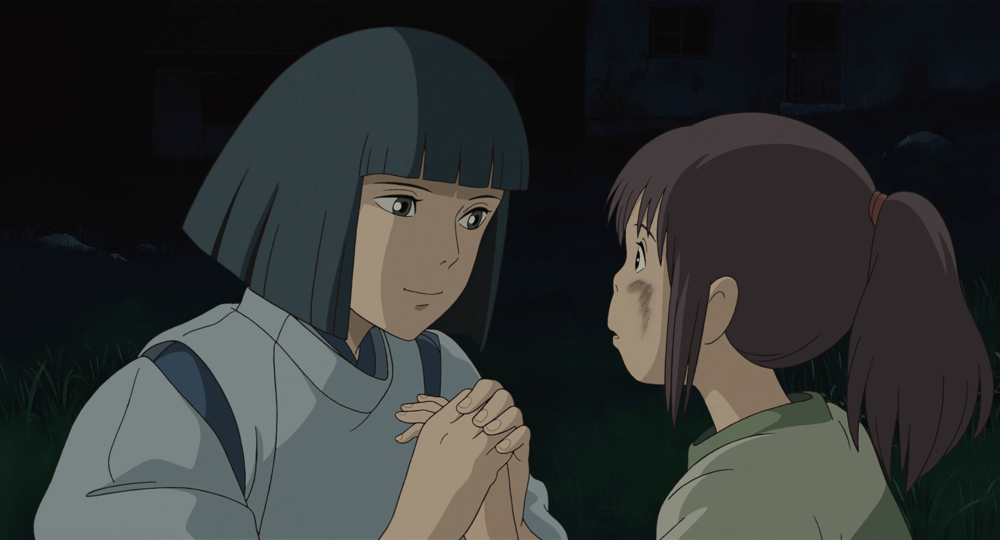
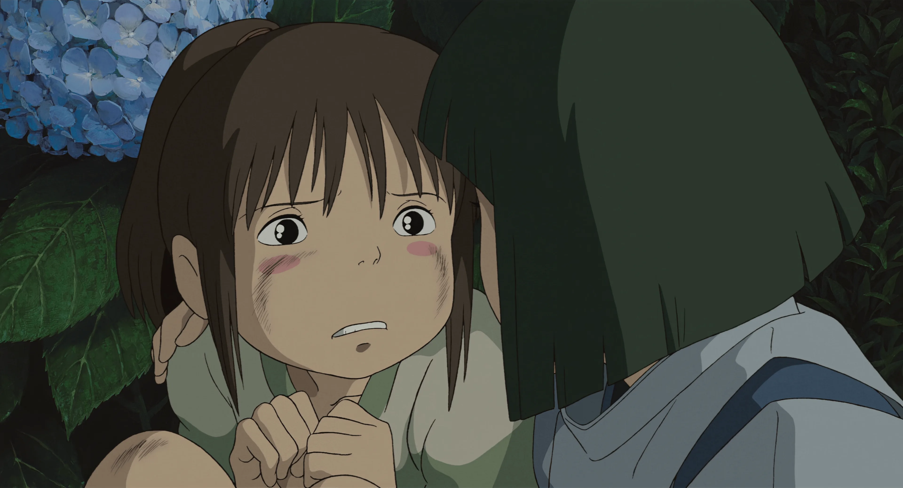
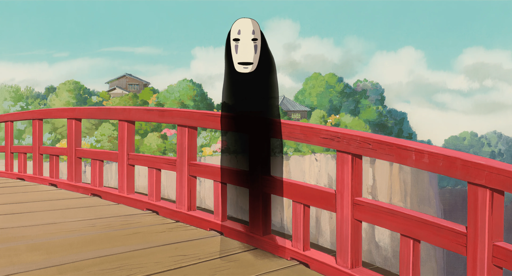
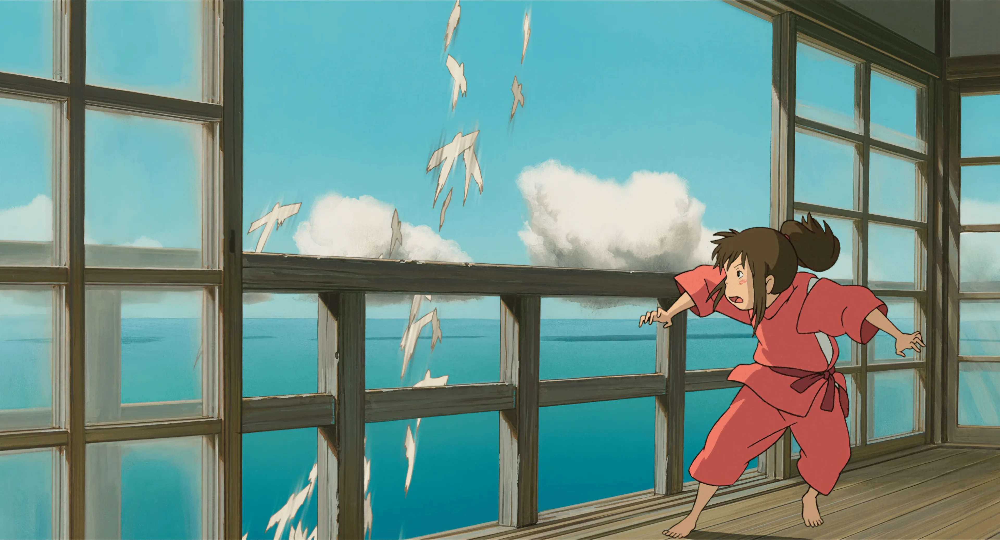

某天，年仅10岁的少女荻野千寻跟着父母坐在车上准备前往要搬入的新家。在路途当中千寻的父亲因开错方向来到一条有着隧道入口的小径。千寻的父母在一时好奇心下带着她前往隧道里头一探究竟。 通过隧道的千寻见到眼前另一端是个看不到任何人的小镇。当千寻的父母来到小镇里发现到有间摆满食物的无人餐馆，便于未经允许的情况下随意享用里头的餐点. 由于千寻不想跟父母一同乱拿食物，于是索性在小镇里四处闲晃，途中在一座桥对面看到一栋像是旅店的建筑。 该建筑实际上是由一位名为“汤外婆”的魔女所经营，提供各方神明泡澡歇憩，名叫“油屋”的澡堂。
当千寻走到桥上时，遇到一位名叫“白龙”的神秘少年，向她警告这里不是她应该进入的地方，就在此时城镇里各处突然冒出像是鬼魅般的形体。被眼前情况受到惊吓的千寻，跑向父母所待的餐馆要他们赶紧一同离开，但汤外婆对千寻父母随意享用食物的行为震怒，于是施法将两人变成猪作为严惩。 千寻看见父母变成猪而再度受到惊吓，开始漫无目的地到处乱跑。就在千寻不知该如何是好时，之前桥上的白龙出现在她面前表示着他愿意协助千寻渡过危机。
白龙暗中将千寻带到油屋并向她解释若要在这个世界存活下来，唯一方法是要向汤外婆获得在油屋工作的资格。之后千寻面临必须在油屋里接触不同形形色色人物、以及各种困难和危机，而她原先娇纵的心理也随着历程开始展开不同变化。为了帮助因为窃取汤外婆的双胞胎姐姐钱外婆的魔女印章、被钱外婆给惩戒的白龙，她独自到钱外婆那里送回魔女印章并在白龙接她回去的路上想起来白龙的名字。最后她通过汤外婆的考验，与白龙互相告别，和父母一起回到现实世界。在片尾名单的最后一幕是千寻当年不慎掉落在河里、促成千寻和白龙相遇的鞋子。